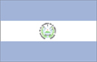

{kind=link}


![[Country map of El Salvador]](../maps/es-map.jpg)
| El Salvador |  |
|
| | |
| Introduction |
Background: El Salvador achieved independence from Spain in 1821 and from the Central American Federation in 1839. A 12-year civil war, which cost the lives of some 75,000 people, was brought to a close in 1992 when the government and leftist rebels signed a treaty that provided for military and political reforms.
| Geography |
Location: Middle America, bordering the North Pacific Ocean, between Guatemala and Honduras
Geographic coordinates: 13 50 N, 88 55 W
Map references: Central America and the Caribbean
Area:
total:
21,040 sq km
land:
20,720 sq km
water:
320 sq km
Area - comparative: slightly smaller than Massachusetts
Land boundaries:
total:
545 km
border countries:
Guatemala 203 km, Honduras 342 km
Coastline: 307 km
Maritime claims:
territorial sea:
200 nm
Climate: tropical; rainy season (May to October); dry season (November to April); tropical on coast; temperate in uplands
Terrain: mostly mountains with narrow coastal belt and central plateau
Elevation extremes:
lowest point:
Pacific Ocean 0 m
highest point:
Cerro El Pital 2,730 m
Natural resources: hydropower, geothermal power, petroleum, arable land
Land use:
arable land:
27%
permanent crops:
8%
permanent pastures:
29%
forests and woodland:
5%
other:
31% (1993 est.)
Irrigated land: 1,200 sq km (1993 est.)
Natural hazards: known as the Land of Volcanoes; frequent and sometimes very destructive earthquakes and volcanic activity
Environment - current issues: deforestation; soil erosion; water pollution; contamination of soils from disposal of toxic wastes; Hurricane Mitch damage
Environment - international agreements:
party to:
Biodiversity, Climate Change, Climate Change-Kyoto Protocol, Desertification, Endangered Species, Hazardous Wastes, Nuclear Test Ban, Ozone Layer Protection, Wetlands
signed, but not ratified:
Law of the Sea
Geography - note: smallest Central American country and only one without a coastline on Caribbean Sea
| People |
Population: 6,122,515 (July 2000 est.)
Age structure:
0-14 years:
38% (male 1,186,328; female 1,141,245)
15-64 years:
57% (male 1,652,083; female 1,833,998)
65 years and over:
5% (male 139,919; female 168,942) (2000 est.)
Population growth rate: 1.87% (2000 est.)
Birth rate: 29.02 births/1,000 population (2000 est.)
Death rate: 6.27 deaths/1,000 population (2000 est.)
Net migration rate: -4.02 migrant(s)/1,000 population (2000 est.)
Sex ratio:
at birth:
1.05 male(s)/female
under 15 years:
1.04 male(s)/female
15-64 years:
0.9 male(s)/female
65 years and over:
0.83 male(s)/female
total population:
0.95 male(s)/female (2000 est.)
Infant mortality rate: 29.22 deaths/1,000 live births (2000 est.)
Life expectancy at birth:
total population:
69.74 years
male:
66.14 years
female:
73.52 years (2000 est.)
Total fertility rate: 3.38 children born/woman (2000 est.)
Nationality:
noun:
Salvadoran(s)
adjective:
Salvadoran
Ethnic groups: mestizo 90%, Amerindian 1%, white 9%
Religions:
Roman Catholic 86%
note:
there is extensive activity by Protestant groups throughout the country; by the end of 1992, there were an estimated 1 million Protestant evangelicals in El Salvador
Languages: Spanish, Nahua (among some Amerindians)
Literacy:
definition:
age 10 and over can read and write
total population:
71.5%
male:
73.5%
female:
69.8% (1995 est.)
| Government |
Country name:
conventional long form:
Republic of El Salvador
conventional short form:
El Salvador
local long form:
Republica de El Salvador
local short form:
El Salvador
Data code: ES
Government type: republic
Capital: San Salvador
Administrative divisions: 14 departments (departamentos, singular - departamento); Ahuachapan, Cabanas, Chalatenango, Cuscatlan, La Libertad, La Paz, La Union, Morazan, San Miguel, San Salvador, Santa Ana, San Vicente, Sonsonate, Usulutan
Independence: 15 September 1821 (from Spain)
National holiday: Independence Day, 15 September (1821)
Constitution: 23 December 1983
Legal system:
based on civil and Roman law, with traces of common law; judicial review of legislative acts in the Supreme Court; accepts compulsory ICJ jurisdiction, with reservations
note:
Legislative Assembly passed landmark judicial reforms in 1996
Suffrage: 18 years of age; universal
Executive branch:
chief of state:
President Francisco FLORES Perez (since 1 June 1999); Vice President Carlos QUINTANILLA Schmidt (since 1 June 1999); note - the president is both the chief of state and head of government
head of government:
President Francisco FLORES Perez (since 1 June 1999); Vice President Carlos QUINTANILLA Schmidt (since 1 June 1999); note - the president is both the chief of state and head of government
cabinet:
Council of Ministers
elections:
president and vice president elected on the same ticket by popular vote for five-year terms; election last held 7 March 1999 (next to be held NA March 2004)
election results:
Francisco FLORES Perez elected president; percent of vote - Francisco FLORES (ARENA) 52%, Facundo GUARDADO (FMLN) 29%, Ruben ZAMORA (CDU) 7.5%, other (no individual above 3%) 11.5%
Legislative branch:
unicameral Legislative Assembly or Asamblea Legislativa (84 seats; members are elected by direct popular vote to serve three-year terms)
elections:
last held 16 March 1997 (next to be held 12 March 2000)
election results:
percent of vote by party - ARENA 35.4%, FMLN 34.3%, PCN 8.1%, PDC 7.9%, CD 3.8%, PRSC 3.4%, PLD 3.2%, MU 2.1%, PD 1.0%, other 0.8%; seats by party - ARENA 28, FMLN 27, PCN 9, PDC 8, PRSC 3, CD 2, PLD 2, MU 1, PD 1, independent 3
Judicial branch: Supreme Court (Corte Suprema), judges are selected by the Legislative Assembly
Political parties and leaders: Christian Democratic Party or PDC [Rene AGUILUZ, secretary general]; Democratic Convergence or CD [Ruben ZAMORA, secretary general]; Farabundo Marti National Liberation Front or FMLN [Jose Fabio CASTILLO]; Liberal Democratic Party or PLD [Kirio Waldo SALGADO, president]; National Conciliation Party or PCN [Ciro CRUZ Zepeda, secretary general]; National Republican Alliance or ARENA [Walter ARAUJO]; Popular Labor Party or PPL [Ernesto VILANOVA, secretary general]; Social Christian Union or USC [Abraham RODRIGUEZ, president]; Social Democratic Party or PD [Jorge MELENDEZ and Juan MEDRANO]; United Democratic Center or CDU [Ruben ZAMORA], bloc includes CD and PD formed by merger of Christian Social Renewal Party or PRSC, National Solidarity Movement or MSN, and the Unity Movement or MU
Political pressure groups and leaders:
labor organizations:
Association of Agricultural Producers or APROAS; Electrical Industry Union of El Salvador or SIES; Federation of the Construction Industry, Similar Transport and other activities, or FESINCONTRANS; National Confederation of Salvadoran Workers or CNTS; National Union of Salvadoran Workers or UNTS; Port Industry Union of El Salvador or SIPES; Salvadoran Workers Central or CTS; Workers Union of Electrical Corporation or STCEL
business organizations:
National Association of Small Enterprise or ANEP; Salvadoran Assembly Industry Association or ASIC; Salvadoran Industrial Association or ASI
International organization participation: BCIE, CACM, ECLAC, FAO, G-77, IADB, IAEA, IBRD, ICAO, ICFTU, ICRM, IDA, IFAD, IFC, IFRCS, ILO, IMF, IMO, Intelsat, Interpol, IOC, IOM, ISO (correspondent), ITU, LAES, LAIA (observer), MINURSO, NAM (observer), OAS, OPANAL, OPCW, PCA, UN, UNCTAD, UNESCO, UNIDO, UPU, WCL, WFTU, WHO, WIPO, WMO, WToO, WTrO
Diplomatic representation in the US:
chief of mission:
Ambassador Rene Antonio LEON Rodriguez
chancery:
2308 California Street NW, Washington, DC 20008
telephone:
[1] (202) 265-9671
consulate(s) general:
Chicago, Dallas, Houston, Los Angeles, Miami, New Orleans, New York, and San Francisco
consulate(s):
Boston
Diplomatic representation from the US:
chief of mission:
Ambassador Anne W. PATTERSON
embassy:
Final Boulevard Santa Elena, Antiguo Cuscatlan, San Salvador
mailing address:
Unit 3116, APO AA 34023
telephone:
[503] 278-4444
FAX:
[503] 278-6011
Flag description: three equal horizontal bands of blue (top), white, and blue with the national coat of arms centered in the white band; the coat of arms features a round emblem encircled by the words REPUBLICA DE EL SALVADOR EN LA AMERICA CENTRAL; similar to the flag of Nicaragua, which has a different coat of arms centered in the white band - it features a triangle encircled by the words REPUBLICA DE NICARAGUA on top and AMERICA CENTRAL on the bottom; also similar to the flag of Honduras, which has five blue stars arranged in an X pattern centered in the white band
| Economy |
Economy - overview: El Salvador is a poor Central American economy which has been suffering from a weak tax collection system, factory closings, the aftermath of Hurricane Mitch, and weak world coffee prices. On the bright side, in recent years inflation has fallen to single digit levels, and total exports have grown substantially. The substantial trade deficit has been offset by remittances from the large number of Salvadorans living abroad and from external aid.
GDP: purchasing power parity - $18.1 billion (1999 est.)
GDP - real growth rate: 2.2% (1999 est.)
GDP - per capita: purchasing power parity - $3,100 (1999 est.)
GDP - composition by sector:
agriculture:
12%
industry:
22%
services:
66% (1999 est.)
Population below poverty line: 48% (1999 est.)
Household income or consumption by percentage share:
lowest 10%:
1.2%
highest 10%:
38.3% (1995)
Inflation rate (consumer prices): 1.3% (1999 est.)
Labor force: 2.35 million (1999)
Labor force - by occupation: agriculture 30%, industry 15%, services 55% (1999 est.)
Unemployment rate: 7.7% (1997 est.)
Budget:
revenues:
$1.5 billion
expenditures:
$1.73 billion, including capital expenditures of $NA (1999)
Industries: food processing, beverages, petroleum, chemicals, fertilizer, textiles, furniture, light metals
Industrial production growth rate: 3.5% (1999 est.)
Electricity - production: 4.1 billion kWh (1999 est.)
Electricity - production by source:
fossil fuel:
49.32%
hydro:
36.46%
nuclear:
0%
other:
14.22% (1998)
Electricity - consumption: 4.17 billion kWh (1999)
Electricity - exports: 30 million kWh (1999)
Electricity - imports: 65 million kWh (1999)
Agriculture - products: coffee, sugarcane, corn, rice, beans, oilseed, cotton, sorghum; beef, dairy products; shrimp
Exports: $2.5 billion (f.o.b., 1999)
Exports - commodities: offshore assembly exports, coffee, sugar, shrimp, textiles, chemicals, electricity
Exports - partners: US 59%, Guatemala 12%, Germany 6%, Costa Rica 4%, Honduras (1998)
Imports: $4.15 billion (c.i.f., 1999)
Imports - commodities: raw materials, consumer goods, capital goods, fuels, foodstuffs, petroleum, electricity
Imports - partners: US 51%, Guatemala 9%, Mexico 6%, Japan 3%, Costa Rica (1999)
Debt - external: $3.3 billion (1999 est.)
Economic aid - recipient: total $252 million; $57 million from US (1999 est.)
Currency: 1 Salvadoran colon (C) = 100 centavos
Exchange rates: Salvadoran colones (C) per US$1 (end of period) - 8.755 fixed rate since 1993
Fiscal year: calendar year
| Communications |
Telephones - main lines in use: 380,000 (1998)
Telephones - mobile cellular: 13,475 (1995)
Telephone system:
domestic:
nationwide microwave radio relay system
international:
satellite earth station - 1 Intelsat (Atlantic Ocean); connected to Central American Microwave System
Radio broadcast stations: AM 61 (plus 24 repeaters), FM 30, shortwave 0 (1998)
Radios: 2.75 million (1997)
Television broadcast stations: 5 (1997)
Televisions: 600,000 (1990)
Internet Service Providers (ISPs): 2 (1999)
| Transportation |
Railways:
total:
602 km (single track; note - some sections abandoned, unusable, or operating at reduced capacity)
narrow gauge:
602 km 0.914-m gauge
Highways:
total:
10,029 km
paved:
1,986 km (including 327 km of expressways)
unpaved:
8,043 km (1997 est.)
Waterways: Rio Lempa partially navigable
Ports and harbors: Acajutla, Puerto Cutuco, La Libertad, La Union, Puerto El Triunfo
Merchant marine: none (1999 est.)
Airports: 85 (1999 est.)
Airports - with paved runways:
total:
4
over 3,047 m:
1
1,524 to 2,437 m:
1
914 to 1,523 m:
2 (1999 est.)
Airports - with unpaved runways:
total:
81
914 to 1,523 m:
17
under 914 m:
64 (1999 est.)
Heliports: 1 (1999 est.)
| Military |
Military branches: Army, Navy, Air Force
Military manpower - military age: 18 years of age
Military manpower - availability:
males age 15-49:
1,428,974 (2000 est.)
Military manpower - fit for military service:
males age 15-49:
906,656 (2000 est.)
Military manpower - reaching military age annually:
males:
67,181 (2000 est.)
Military expenditures - dollar figure: $105 million (FY98)
Military expenditures - percent of GDP: 0.9% (FY98)
| Transnational Issues |
Disputes - international: the Honduras-El Salvador Border Protocol ratified by Honduras in May 1999 established a framework for a long-delayed border demarcation, which is currently underway; with respect to the maritime boundary in the Golfo de Fonseca, the ICJ referred to the line determined by the 1900 Honduras-Nicaragua Mixed Boundary Commission and advised that some tripartite resolution among El Salvador, Honduras and Nicaragua likely would be required
Illicit drugs: transshipment point for cocaine; marijuana produced for local consumption; domestic drug abuse on the rise